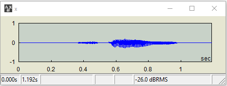
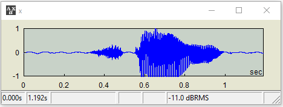
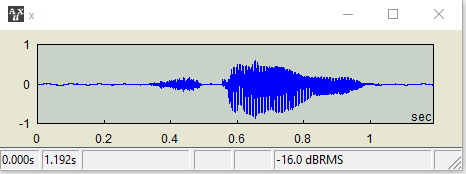

| x @= y |
Compound operator for the level operator @@
Also known as relative level operator
| Equivalent expression |
| x = x @ x @ y |
| Commutative | |
|---|---|
| No |
| Data Types |
|---|
| x | y |
|---|---|
| AUD | SCAL |
| Notes |
|---|
In other words, the signal x with the level adjusted by y dB from its own rms. Therefore, this is also known as an "incremental" level operator. |
| Examples |
|---|
| Open a .wav file. The RMS level of this audio happens to be -26 dB. |
| AUX> x=wave("spring")  |
| I want to increase its RMS level by 15 dB. |
| AUX> x @@= 15  |
| Oops, we have a peak-clipping situation. A 15-dB increase was too much. Let's go down by 5 dB. |
| AUX> x @@= -5  |
| This looks good! |